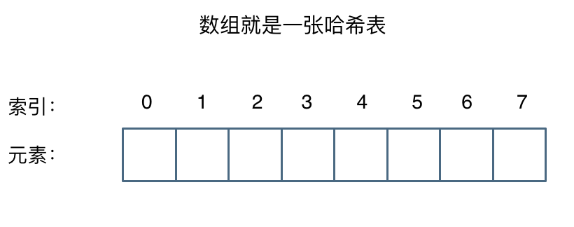

02 哈希表
完成时间：2024-06-11

图片来自代码随想录总结。（@ 代码随想录-哈希表理论基础）
哈希表
哈希表中关键码就是数组的索引下标，然后通过下标直接访问数组中的元素。
哈希表一般用于解决的问题：快速判断一个元素是否出现集合里。
常见的三种哈希结构
当我们想使用哈希法来解决问题的时候，我们一般会选择如下三种数据结构：
· 数组
· set（集合）
· map(映射)
set 和 map 分别提供以下三种数据结构，其底层实现以及优劣如下表所示：
1. set：
| 集合 | 底层实现 | 是否有序 | 数值可重复 | 数值可更改 | 查询效率 | 增删效率 |
|---|---|---|---|---|---|---|
| std::set | 红黑树 | 有序 | 否 | 否 | O(log n) | O(log n) |
| std::multiset | 红黑树 | 有序 | 是 | 否 | O(log n) | O(log n) |
| std::unordered_set | 哈希表 | 无序 | 否 | 否 | O(1) | O(1) |
std::unordered_set底层实现为哈希表，std::set 和std::multiset 的底层实现是红黑树，红黑树是一种平衡二叉搜索树，所以key值是有序的，但key不可以修改，改动key值会导致整棵树的错乱，所以只能删除和增加。
2. map：
| 映射 | 底层实现 | 是否有序 | 数值可重复 | 数值可更改 | 查询效率 | 增删效率 |
|---|---|---|---|---|---|---|
| std::map | 红黑树 | key有序 | key不可重复 | key不可修改 | O(log n) | O(log n) |
| std::multimap | 红黑树 | key有序 | key可重复 | key不可修改 | O(log n) | O(log n) |
| std::unordered_map | 哈希表 | key无序 | key不可重复 | key不可修改 | O(1) | O(1) |
std::unordered_map 底层实现为哈希表，std::map 和std::multimap 的底层实现是红黑树。同理，std::map 和std::multimap 的key也是有序的。
↑（这个问题也经常作为面试题，考察对语言容器底层的理解）。
当我们要使用集合来解决哈希问题的时候，优先使用unordered_set，因为它的查询和增删效率是最优的，如果需要集合是有序的，那么就用set，如果要求不仅有序还要有重复数据的话，那么就用multiset。
那么再来看一下map ，在map 是一个key value 的数据结构，map中，对key是有限制，对value没有限制的，因为key的存储方式使用红黑树实现的。
其他语言例如：java里的HashMap ，TreeMap 都是一样的原理。可以灵活贯通
虽然std::set和std::multiset 的底层实现基于红黑树而非哈希表，它们通过红黑树来索引和存储数据。不过给我们的使用方式，还是哈希法的使用方式，即依靠键（key）来访问值（value）。所以使用这些数据结构来解决映射问题的方法，我们依然称之为哈希法。std::map也是一样的道理。
总结
总结一下，当我们遇到了要快速判断一个元素是否出现集合里的时候，就要考虑哈希法。
但是哈希法也是牺牲了空间换取了时间，因为我们要使用额外的数组，set或者是map来存放数据，才能实现快速的查找。